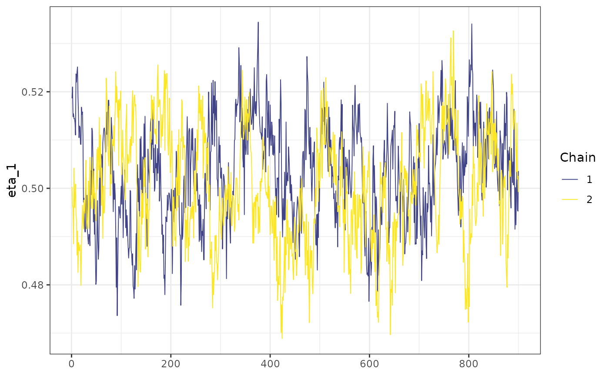
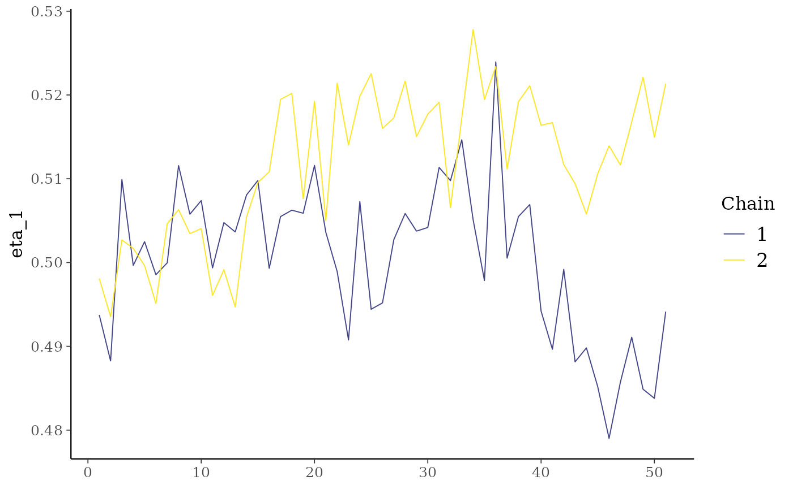
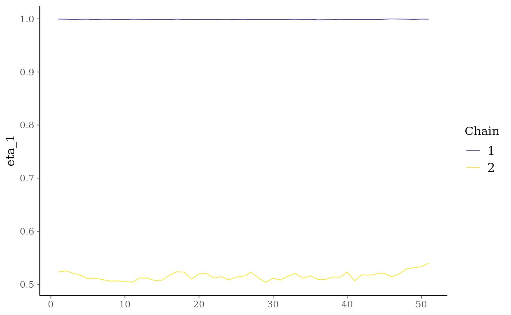

Posterior analysis with bayesplot
posterior_analysis.RmdA survival_ln_mixture object holds the posterior chain
as a ?posterior::draws_matrix object, and can be analysed
using the Stan ecosystem tools, like bayesplot.
library(lnmixsurv)
#> Loading required package: parsnip
#> Loading required package: survival
library(bayesplot)
#> This is bayesplot version 1.10.0
#> - Online documentation and vignettes at mc-stan.org/bayesplot
#> - bayesplot theme set to bayesplot::theme_default()
#> * Does _not_ affect other ggplot2 plots
#> * See ?bayesplot_theme_set for details on theme setting
mod1 <- survival_ln_mixture(Surv(y, delta) ~ x, data = sim_data$data,
starting_seed = 1, chains = 2)
color_scheme_set('viridis')
mcmc_trace(mod1$posterior[, 'eta_1'])
Since the seed is fixed, we expect to obtain the same chain if we run the model again, with the same seed. We can make sure this is happening by look at a small portion of the chains.
mod2 <- survival_ln_mixture(Surv(y, delta) ~ x, data = sim_data$data,
starting_seed = 1, chains = 2)
mcmc_trace(posterior::subset_draws(mod1$posterior, iteration = 550:600,
variable = 'eta_1'))
mcmc_trace(posterior::subset_draws(mod2$posterior, iteration = 550:600,
variable = 'eta_1'))